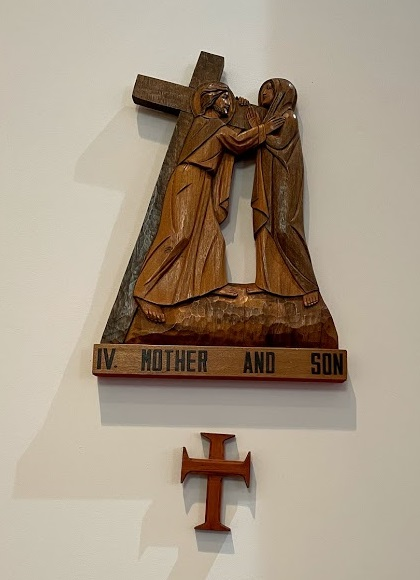

My mother sees me whipped. She sees me kicked and driven like a beast. She counts my every wound. But though her soul cries out in agony, no protest or complaint escapes her lips or even enters her thoughts.
She shares my martyrdom━ and I share hers. We hide no pain, no sorrow, from each other's eyes. This is my Father's will.